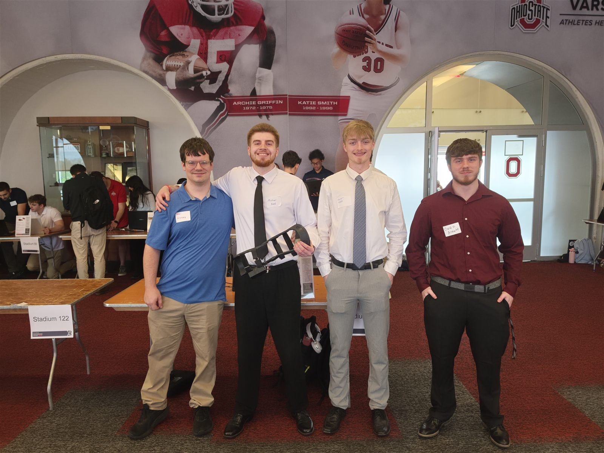

Software Engineering
Full-stack, mobile, and backend development shaped by object-oriented design, APIs, testing, and maintainable architecture.
Java · Python · JavaScript · FlutterOpen to Summer 2027 internships
Michael Frueh Jr. · Computer Science & Engineering @ Ohio State
I build full-stack AI applications, offline-first mobile products, browser extensions, and operational automations. I am targeting Software Engineering, AI Engineering, Data Analyst, and data-focused engineering roles, with an incoming Honda Data Services co-op in Spring 2027.
Career focus
I care about systems that are useful beyond the demo: thoughtfully designed, testable, and grounded in real workflows.
Full-stack, mobile, and backend development shaped by object-oriented design, APIs, testing, and maintainable architecture.
Java · Python · JavaScript · FlutterAI-enabled products that turn course material and local content into practical user experiences with privacy and context in mind.
FastAPI · OpenAI API · REST APIsLocal data workflows, reporting, systems integrations, and reusable automation for operational decision-making.
SQLite · Graph API · Rewst · NinjaOneSelected work
From context-aware study tooling to local-first mobile architecture and privacy-minded browser software.
Showing all 5 projects
A full-stack study application that transforms lecture audio and course materials into structured notes, quizzes, and flashcards through REST API integrations.
An offline-first Android music application designed around durable local data, uninterrupted playback, and a complete library experience.
A configurable Chrome and Firefox extension with local-first content processing and blocking. Accounts, telemetry, and cloud inference are off by default.
Collaborated on an eight-person team to design and program an autonomous factory pallet mover prototype, integrating software and hardware through iterative testing toward a working demonstration.

A team-built physical therapy prototype pairing ESP32 motion sensing with a Flutter and Bluetooth Low Energy companion experience for gait data and feedback.
Relevant experience
Professional experience spanning data services, automation integrations, technical documentation, and frontline systems support.
Honda
Selected to support data and IT initiatives through analysis, stakeholder requirements, project planning, standardized reporting, and process improvement.
Perry proTECH
The Ohio State University
Technical toolkit
Tools I have used across coursework, personal products, IT operations, and professional automation work.
01 / Languages
02 / Frameworks
03 / Platforms
04 / Foundations
Education
Columbus, OH
Artificial Intelligence specialization
Achievement
Collaborated to develop and present a working AI solution under tight time constraints.
Technical & campus involvement
Summer 2027
I am seeking a Summer 2027 Software Engineering, AI Engineering, Data Analyst, or data-focused engineering internship where I can contribute, learn quickly, and ship thoughtful work.